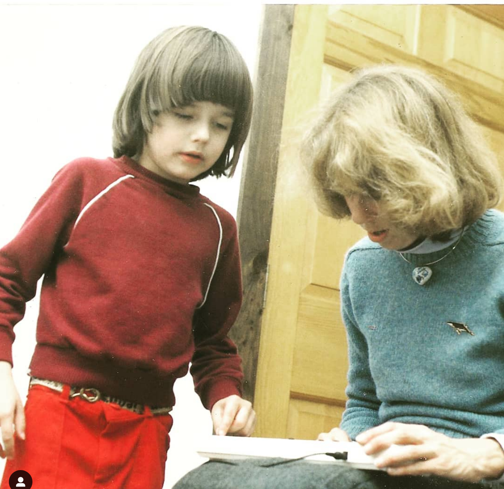

 Compassion for a broken grown-up 9 years ago 1 min read journalblah blahpersonal I’m a work in progress, but that progression isn’t straight. I’ve fallen off of focus, but I get back on. And no one is perfect. Being more…